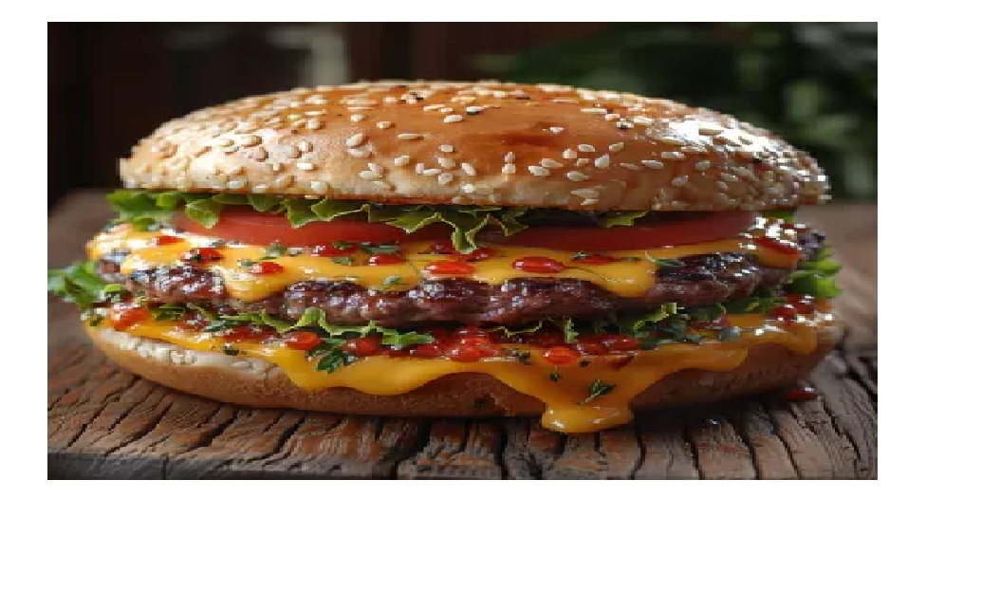

Classic Cheeseburger

Ingredients
- 1 lb ground beef (80/20 mix)
- 4 hamburger buns, toasted
- 4 slices cheddar cheese
- Lettuce leaves
- 1 large tomato, sliced
- Salt and black pepper to taste
Step-by-Step Instructions
- Divide the ground beef into 4 equal portions and shape them into patties slightly larger than the buns.
- Season both sides of the patties generously with salt and pepper.
- Heat a grill or large skillet over medium-high heat.
- Cook the patties for 3-4 minutes per side for medium doneness.
- During the last minute of cooking, place a slice of cheese on each patty to melt.
- Assemble the burgers by placing the lettuce, tomato, and cheesy patties on the toasted buns.